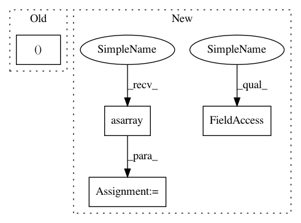

064befd0e41c3045cee206f9ec8d56f1b027115e,niftynet/engine/windows_aggregator_resize.py,ResizeSamplesAggregator,decode_batch,#ResizeSamplesAggregator#Any#Any#Any#,60
Before Change
n_channels=window[w].shape[-1])
self.image_out[w] = window[w][batch_id, ...]
else:
if isinstance(window[w], (np.int, np.float32, np.bool)):
window_loc = np.reshape(window[w], [1, 1])
self.csv_out[w] = self._initialise_empty_csv(
n_channel=1)
After Change
window[w] = window[w][..., np.newaxis, :]
self.image_out[w] = window[w][batch_id, ...]
else:
if not isinstance(window[w], (list, tuple, np.ndarray)):
window_loc = np.reshape(window[w], [1, 1])
self.csv_out[w] = self._initialise_empty_csv(1)
else:
window[w] = np.asarray(window[w])
try:
assert window[w].ndim <= 2
except (TypeError, AssertionError):
tf.logging.warning(
In pattern: SUPERPATTERN
Frequency: 4
Non-data size: 4
Instances
Project Name: NifTK/NiftyNet
Commit Name: 064befd0e41c3045cee206f9ec8d56f1b027115e
Time: 2019-06-05
Author: carole.sudre@kcl.ac.uk
File Name: niftynet/engine/windows_aggregator_resize.py
Class Name: ResizeSamplesAggregator
Method Name: decode_batch
Project Name: NifTK/NiftyNet
Commit Name: 324b3a52837f46aac644a31eecfa361d728775de
Time: 2017-12-21
Author: wenqi.li@ucl.ac.uk
File Name: niftynet/contrib/sampler_pairwise/sampler_pairwise.py
Class Name: PairwiseSampler
Method Name: get_pairwise_inputs
Project Name: keras-team/keras
Commit Name: b95fcf7f52aca8ad0b1afb3cfc64c8eed534fafe
Time: 2017-07-29
Author: me@taehoonlee.com
File Name: tests/keras/backend/backend_test.py
Class Name: TestBackend
Method Name: test_nn_operations
Project Name: NifTK/NiftyNet
Commit Name: c8b28432a637a780eed96547260722ff3dede57e
Time: 2017-10-04
Author: wenqi.li@ucl.ac.uk
File Name: niftynet/engine/sampler_selective.py
Class Name:
Method Name: rand_choice_coordinates